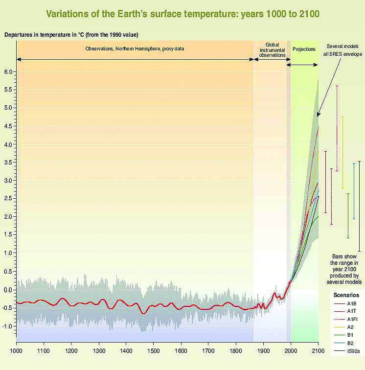

Business and human activities can be direct threats to ecosystems. They can cause destruction, degradation, and the impairment of biodiversity and other natural resources. Ecosystem threats include (1) climate changeChanges in the climate system outside of historical norms. In the last 150 years, it refers to the deviation from historical climate patterns as a result of human activity., (2) pollutionContamination of the environment with harmful sources typically from man-made sources but can also occur from naturally occurring sources., (3) habitat destructionHuman activity that damages ecosystems., (4) overexploitationThe taking of a natural renewable resource (typically a biological species but can also apply to nonliving renewable resources) at a greater rate than it can replenish and sustain itself. This diminishes and can destroy the resource., and (5) introduction of invasive speciesThe accidental or intentional introduction of a species to a new ecosystem that results in damage to the ecosystem when the introduced species outcompetes or attacks indigenous species.. Business and human activities can stress the ecosystem they operate in reducing its overall health and at some point the accumulation of all negative impact from human activities can exceed the ecological thresholdA tipping point where the stresses on an ecosystem exceed its capacity to absorb them and feature a major loss of biodiversity and natural resource health and quality. of the planet. Driving these human activities are population, affluence, and technology.
Climate change is one of the greatest threats to sustainability. It is a controversial and contested topic. As highlighted in the previous section, the earth’s climateLong-term temperature, humidity, wind, and rainfall of a region of Earth, and it is impacted by its latitude, geography, and proximity to water. Climate differs from weather, in that weather consists of the same factors observed over a very short period of time. does fluctuate over time due to a variety of factors. However, there is a significant body of scientific research that indicates that global temperatures are rising and that rising global temperatures are directly linked to human activities involving the emissions of greenhouse gases (GHG).“IPCC Fourth Assessment Report, Working Group III, Mitigation of Climate Change,” IPCC, http://www.ipcc.ch. GHG traps heat in the atmosphere allowing the planet to be a habitable place. The primary GHG of interest is carbon dioxide (CO2), which is a vital gas in our earth system and is released from various sources, including the combustion of fossil fuels. Over the last two centuries, rapid industrialization and the corresponding increased burning of fossil fuels and deforestation of large tracts of land globally has caused the concentrations of greenhouse gases to increase significantly in our atmosphere. Current atmospheric carbon dioxide levels exceed the natural range observed over at least the last 800,000 years and are rapidly rising.

Source: Robert A. Rohde, http://en.wikipedia.org/wiki/File:Carbon_Dioxide_400kyr.png.
In January 2012, global carbon dioxide levels reached a high of 393 parts per million (ppm) at the Mauna Loa Observatory in Hawaii. This was up from 391 ppm from January 2011 and continues a long-term trend of rising levels of carbon dioxide in the atmosphere."Trends in Atmospheric Carbon Dioxide,” National Oceanic & Atmospheric Administration, http://www.esrl.noaa.gov/gmd/ccgg/trends. The Mauna Loa Observatory has been performing continuous monitoring of atmospheric carbon dioxide since 1956.

Source: Wikipedia, http://en.wikipedia.org/wiki/File:CO2_data_mlo.svg.
Some greenhouse gases, such as carbon dioxide, occur naturally and are emitted to the atmosphere through natural processes and human activities. Other greenhouse gases (e.g., fluorinated gases) are created and emitted solely through human activities. Not all greenhouse gases have the same impact. Global warming potential (GWP) is a relative measure of how much heat a greenhouse gas traps in the atmosphere. GWP is standardized to carbon dioxide, which has a GWP of one.
The principal greenhouse gases that enter the atmosphere because of human activities—also called anthropogenic—are as follows:
Average global temperatures have increased 1.3 degrees Fahrenheit since 1850, with the trend in warming in the last fifty years being almost double that of the prior one hundred years. The twentieth century’s last two decades were the warmest in four hundred years. Current projections have global temperature further increasing by a significant two degrees to twelve degrees Fahrenheit by 2100.“IPCC Fourth Assessment Report, Working Group III, Mitigation of Climate Change,” IPCC, http://www.ipcc.ch. Temperature increases of this magnitude will adversely affect the planet through rising sea levels, shrinking glaciers, changing of the range and distribution of plants and animals, lengthening of growing seasons, changing of weather patterns, and human health effects. People are affected by climate change through extreme periods of heat and cold, storms, climate sensitive diseases, prolonged and increased levels of smog, and economics (e.g., volatility in retail prices; resource scarcity; and changing work patterns, conditions, and incomes).“Climate Change—Health and Environmental Effects,” US Environmental Protection Agency, http://www.epa.gov/climatechange/effects/index.html#ref.
Changes in global temperature are impacting the global climate in significant ways, including the following:
Current science suggests that to significantly reduce the threats of global climate change, worldwide reductions of carbon dioxide emissions by 80 percent below current levels will be required by 2050.“World Needs to Axe Greenhouse Gases by 80 pct: Report,” Reuters, April 19, 2007, http://www.reuters.com/article/2007/04/19/us-globalwarming-idUSL194440620070419.
Figure 2.5 Historic and Projected Global Temperatureshttp://www.grida.no/publications/other/ipcc_tar/?src=/climate/ipcc_tar/vol4/english/figspm-10b.htm.
Source: Intergovernmental Panel on Climate Change (IPCC).
Table 2.2 Global Emissions of CO2 (2009)
| Rank | Country | Emissions (Millions of Metric Tons) | Global Total (%) |
|---|---|---|---|
| 1 | People’s Rep. of China | 6,831.6 | 22 |
| 2 | United States | 5,195.0 | 16 |
| 3 | European Union—27 | 3,576.8 | 11 |
| 4 | India | 1,585.8 | 5 |
| 5 | Russian Federation | 1,532.6 | 5 |
| 6 | Japan | 1,092.9 | 3 |
| 7 | Germany | 750.2 | 2 |
| 8 | Islamic Rep. of Iran | 533.2 | 2 |
| 9 | Canada | 520.7 | 2 |
| 10 | Korea | 515.5 | 2 |
| 131 Remaining Countries | 9,426.2 | 30 | |
| Total | 31,560.5 | 100 |
Source: “CO2 Emissions from Fuel Combustion—Highlights,” International Energy Agency, http://www.iea.org/co2highlights.
In 2008, global carbon dioxide emissions were 4.8 metric tons per capita. The highest per capita emission was Qatar with 49 metric tons per capita caused by their high emitting gas production sector and their small populations. The United States was the tenth highest per capita emitter of carbon dioxide emissions at 17.9 metric tons per capita. Even though China had the highest absolute level of emissions, it was ranked seventy-ninth at 5.3 metric tons of CO2 per capita. “CO2 Emissions (Metric Tons per Capita),” World Bank, http://data.worldbank.org/indicator/EN.ATM.CO2E.PC/countries/1W?display=default. Per capita emissions are on average higher in developed economies than emerging economies. Countries that were members of the Organisation for Economic Co-operation and Development (OECD) had average emissions of 10.5 metric tons per capita while countries that were classified by the United Nations as the least developed countries had per capita missions of 0.24 metric tons per capita.
It is important to note that there are those that deny the significance of climate change on the human condition and the impact of human and business activity on climate change. Climate change denial dismisses the scientific consensus on the extent of global warming, its significance, and its connection to human behavior. As will be highlighted in the next chapter, climate change denial has been mostly associated with the energy lobby and free market think tanks, often in the United States.
A 2010 paper in the Proceedings of the National Academy of Sciences of the United States (PNAS) reviewed publication and citation data for 1,372 climate researchers and drew the following two conclusions:William R. L. Anderegg, James W. Prall, Jacob Harold, and Stephen H. Schneider, “Expert Credibility in Climate Change,” Proceedings of the National Academy of Sciences of the United States of America, April 9, 2010, http://www.pnas.org/content/early/2010/06/04/1003187107.full.pdf+html.
Pollution is the contamination, harm, or disruption of the natural environment through the emissions of harmful substances. Pollution is most typically associated with anthropogenicA scientific term frequently used in discussing climate change and pollution; it means coming from human sources. sources but can also occur from natural activity, such as volcanic eruptions. Pollution can impact air, water, and land. Pollutants include domestic, industrial, and agricultural waste. It comes in many different forms and can be chemical substances or noise, heat, or light.
Pollution can be either point sourcePollution that is emitted from an easily identifiable source, such as a power plant. or nonpoint sourcePollution in aggregate from many small, difficult to individually identify sources.. Point source is a specific and easily identifiable source of pollution, such as a factory or power plant. Nonpoint sources consist of many small, distributed sources of a pollutant that are difficult to individually identify and on their own may not be that harmful but in aggregate are significant sources of pollution. A classic example of nonpoint source would be soap detergents, fertilizers, and other commonly used chemicals and products from many residences and businesses that then contaminate watershedsAn area of land where all water drains into the same water system. with high levels of nitrogen. Nonpoint sources tend to be more complex to regulate for pollution emissions.
Pollution is not just toxic substances; it can be pollutants that are actually part of a healthful ecosystem in the proper quantities, such as nitrogen or carbon dioxide, but that in excessive quantities alter the normal functioning of an ecosystem resulting in harm to the ecosystem. Pollution can range from highly dangerous radioactive materials to airborne dust (a substance that is typically benign) resulting from land erosion.
Air pollution, the contamination of the atmosphere by airborne pollutants, is most often related to combustion of fuel from either stationary or mobile sources. Stationary sources include the smoke stacks of factories, power plants, and furnaces or boilers. Mobile sources refer to motor vehicles, aircraft, and other forms of fossil-fuel-based transportation. Paints, chemicals, and aerosol sprays also can pollute the air. Natural sources of air pollution include dust, methane from livestock, volcanic activity, wildfires, and even vegetation.
Concerns over air pollution are not just a modern occurrence but date back many centuries. In 1272, King Edward I banned the burning of sea-coal in England after the smoke was having deleterious effects on the city of London. In fact, the punishment was pretty steep—death by hanging. And it was a punishment that was enforced. Nowadays, fines are a more typical punishment for any type of pollution.
In the United States, California has led the nation in regulating the emissions of air pollution, primarily because it was one of the first states in the nation to locally observe the detrimental impacts of air pollution. Los Angeles has been the focus point for air pollution in California with severe bouts of smog for at least the past one hundred years. The first “officially” recognized episode of smog occurred in Los Angeles during the summer of 1943. Visibility was reduced to three blocks and people suffered from stinging eyes, difficulty breathing, nausea, and vomiting.“The Southland’s War on Smog: Fifty Years of Progress toward Clean Air,” South Coast Air Quality Management District, http://www.aqmd.gov/news1/Archives/History/marchcov.html.
Figure 2.6 Photo Recording of Smog in Los Angeles

Source: Wikimedia, http://commons.wikimedia.org/wiki/File:Aab_Pasadena_Highway_Los_Angeles.jpg.
Growing concern over the harmful environmental impacts of industry motivated the US environmental movement in the 1960s and 1970s. The movement resulted in the passage of many major environmental laws that impact the business climate of the United States today. See the chapter on government, public policy, and sustainable business for a more detailed discussion.
Pollution continues to be a major focus globally. China, which has become increasingly industrialized, now finds that half of its water can no longer be used for human consumption and over a quarter is so toxic that it is unsafe even for industrial use.“Over Half of China’s Water Polluted Beyond Drinkability,” Natural News, http://www.naturalnews.com/030630_China_pollution.html.
Municipal solid waste (MSW)A form of waste commonly called trash, garbage, or refuse. is a waste product that becomes a form of pollution if not properly managed. MSW is more commonly thought of as garbage, refuse, or trash. Solid waste is not necessarily toxic but includes discarded materials that need to be properly processed and disposed. Examples of solid waste include household trash, used tires, discarded appliances, furniture, paints, and construction and demolition debris.
In 2008, the United States generated 389.5 million tons of solid waste. Only 24 percent of the waste was recycledReclaiming a material that has outlived its useful life and remanufacturing the material into a new product., 6 percent was burned to produce energy, and the remaining 69 percent was landfilled.“State of Garbage,” BioCycle, October 2010. With 70 percent of waste being sent to landfills, there is still considerable opportunity for waste recovery for recycling or as an energy source.
Energy can be recovered from landfill sites through different forms, such as methane gas. Methane gas can be used to generate electricity or be burned as a heat source. However, the vast majority of waste is being disposed of, even though it contains resources (metals, plastics, and paper) that could be reused or recycled to reduce the demand on new resources. For example, cardboard that is recycled helps reduce the demand for trees to be cut down to make new cardboard.
The EPA encourages MSW to be managed through source reductionAlso known as waste prevention; taking steps to avoid generating waste in the first place., recycling, and compostingCollecting organic waste, such as food scraps, and using natural processes to break the material down into an important soil component.. Source reduction involves taking steps to reduce the waste material produced. This can include using materials more efficiently, reusing materials, or switching to substitutes that generate less waste. The average US recycling rate is 24 percent but has the potential to be considerably higher.“Wastes—Non-Hazardous Waste—Municipal Solid Waste,” US Environmental Protection Agency, http://www.epa.gov/epawaste/nonhaz/municipal/index.htm. There are opportunities for new sustainable businesses to better manage solid waste, including increasing the recycling rate and composting.
Portsmouth, New Hampshire, has one of the highest numbers of restaurants per capita in the country and these restaurants generate a large volume of food waste that is expensive to dispose of. Entrepreneurs Rian Bedard and partner Marcel Miranda saw this waste as an opportunity and formed Ecomovement Consulting and Hauling (http://zerowastenow.com/) in 2009. Bedard stated, “I started to find out that no one was offering zero-waste services and everyone wanted it.”
Customers pay for compostable bags and put the food waste in a recycling tote outside, which are then collected regularly by Ecomovement. The food waste is then brought to a local farm to be converted to compost, a high-value soil component sought after by gardeners and landscapers. In addition to restaurants, other large food waste generators have signed up with Ecomovement, including hospital cafeterias. In North America, only two cities can boast that all of their restaurants compost, but with an entrepreneurial company finding a niche missed by traditional waste management companies, Portsmouth is well on its way to becoming the third.“City Eateries Compost with Eco Movement,” Seacoast Online, http://www.seacoastonline.com/articles/20100614-NEWS-6140331.
Ecomovement Consulting can be followed on Facebook at http://www.facebook.com/pages/EcoMovement-Consulting-Hauling/172316763400.
Habitat destruction brought on by the activity of humans threatens resident species and ecosystems. Two examples of habitat destruction are deforestation and desertification. Deforestation occurs when a forest or stand of trees is removed, converting the land to a nonforest use. This changes the ecosystem drastically and results in a dramatic loss of biodiversity. Deforestation can be the result of timber harvesting or of clearing land for agricultural, commercial, or residential use. The loss of biodiversity and trees alters the ecosystem and can result in aridity and erosion. It also results in climate change and extinction, and it can lead to desertification if on a significant enough scale. The social impacts can include displacement of indigenous peoples.
Desertification is the degradation of land quality and features low biodiversity, dry conditions, and poor soil quality. Deserts are formed through both natural processes and human activity. However, desertification is occurring at a greater rate than past geological time scales due to human activity. The concept of desertification became well known in the United States in the 1930s, when parts of the Great Plains in the United States turned into the “Dust Bowl” as a result of drought and poor agricultural practices.“Desertification,” US Geologic Services, http://pubs.usgs.gov/gip/deserts/desertification.
Overexploitation is a major threat to ecosystems and therefore sustainability. It is the consumption of a natural resource at a rate greater than that natural resource can maintain itself. Overhunting of species (see “What Happened to All the Fish” as follows) is one of the clearest examples of overexploitation, but there are other forms. Land degradations are human-induced changes that impair the capacity of the land to sustain life. Deforestation and overgrazing exploit the land and result in the exceeding of sustainable yield.
Grand Banks Annual Catch (Metric Tons)
Source: Annual Catch of Cod from 1850 to 2011, Myers et al., 1995; Northwest Atlantic Fisheries Organization.
The Grand Banks along the shores of Newfoundland, Canada, were once so full of cod that explorer John Cabot remarked in 1497 that they appeared so thick that a person “could walk across their backs,” and sailors reported to be able to catch them just by throwing buckets over the side of the ship. From 1850 to 1950, the fishing industry yielded an overall annual catch of about 200,000 tons of cod. With new technology in commercial fishing boats, catches of cod increased in the late 1950s and early 1960s, peaking at 800,000 tons in 1968. Commercial fishing was catching cod faster than their stock could replenish itself, and by 1975, the catch had declined to 300,000 tons. The catch continued at approximately this level through the 1990s but only through the use of more damaging fishing techniques. In 1992, the cod fishery off Newfoundland collapsed. It was estimated that the entire cod population in the Grand Banks at that time was only 1,700 tons. In response, Canada set an indefinite moratorium on fishing in the Grand Banks. This collapse devastated the local economy with the loss of forty thousand jobs in the fishing industry. In response, the federal government put up nearly a $1 billion to assist with social welfare payments and retraining of people employed in the fishery trade.
The case of the cod in Newfoundland illustrates how the unsustainable harvesting of a resource, when the yield reduces the overall base of that resource, is not only bad for the environment but also bad for industry and for the economy. Overfishing and habitat destruction damaged nature’s ability to provide fish in the Grand Banks. This resulted in a loss to a significant portion of the eastern Canadian economy and the members of the fishery communities experienced true hardship due to the overfishing. Prior to the overfishing that occurred during the second half of the twentieth century, the fish had supported seaside communities for hundreds of years.
Invasive species are brought on by transporting species either intentionally or accidentally from other areas of the world. This can be devastating to existing species as invasive species are introduced on a timescale much more quickly than typically would happen with evolution over longer time periods. This can include outcompeting native species in the ecosystem, leading to the decline or extinction of local species, and overpopulation as these invasive species may not have any predators in this new ecosystem. They also can be a major economic cost.
The zebra mussel provides an invasive species that has had significant economic impacts. The zebra mussel is native to lakes in Russia but was accidentally introduced in the United States and Canada through the ballast water of commercial ships that were transporting goods to the Great Lakes region in the 1980s. They have been spreading ever since and have recently been found in lakes in Massachusetts; they attach to recreational boats and are transported wherever the boat may go. They colonize rapidly and have covered the undersides of docks, boats, and other marine structures and can grow so thick that they block municipal water and hydroelectric pipelines. The cost of pest management for zebra mussels at power plants and other water-consuming facilities is approximately $500 million a year in the United States.Center for Invasive Species Research at the University of California, Riverside.
Human population growth is a factor in human ecosystem impact. From 0 AD to the present, global population has increased from three hundred million to seven billion. While population growth was once considered to be one of the leading drivers of human impacts on ecosystems, it does not adequately explain all the impacts that come from human activities. One concept that is useful in understanding the multiple factors that interact to impact environmental quality is the IPAT equation. The equation was developed in the early 1970s by scientists John Holdren and Paul Ehrlich to explain the human factors that create environmental impact.
I = P x A x TImpact (I) was expressed as the product of population (P), affluence (A), and technology (T). This formula doesn’t quantify actual impacts, but is meant to state relationships. Also, P, A, and T are not independent variables but are interdependent. It does not show a simple multiplicative relationship among the main factors; research has shown that a doubling of population, for example, does not necessarily lead to a doubling of impact. Affluence is related to consumption where more affluent societies are able to consume more resources than less affluent societies can. Technology is a more complex factor as it can provide the means to extract greater quantities of resources but also can be used to limit consumption of resources.
The IPAT equation does not identify sustainable limits but does assist in increasing understanding of the general factors that increase or decrease environmental impact. By highlighting the interplay among a variety of factors in creating an impact, the IPAT equation demonstrates that there are multiple ways of reducing undesirable effects.